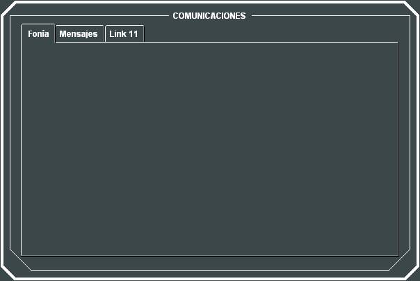
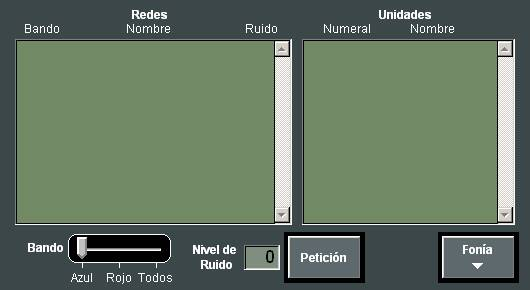
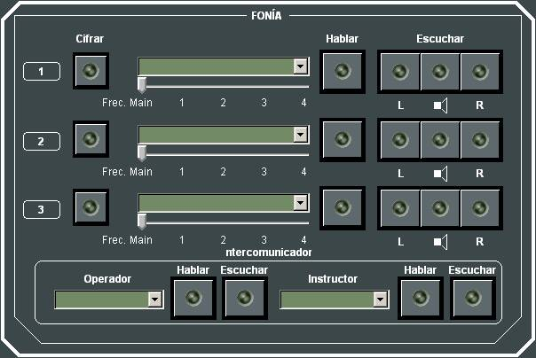
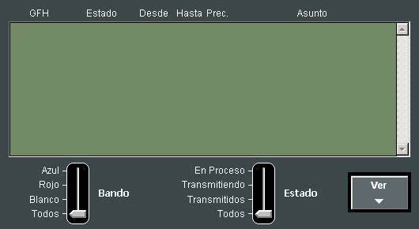
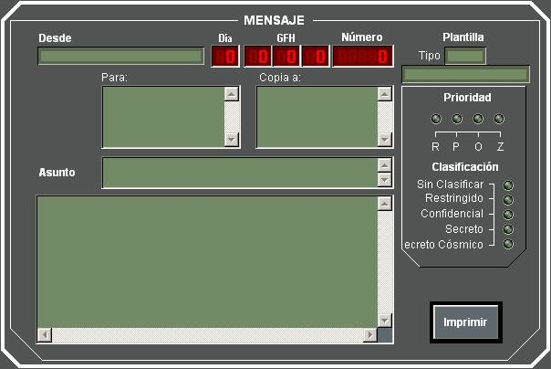
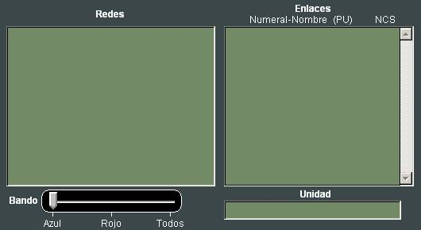

Control de Comunicaciones
En el diálogo de Control de Comunicaciones, se presentan distintas subventanas, en las que el Instructor puede llevar a cabo acciones para control de las redes de fonía, mensajería y Link11:

Control de Fonía:
Mediante la subventana de control de Fonía el Instructor puede aplicar un nivel de ruido en las Redes de Fonía del Ejercicio y acceder al diálogo de Fonía específico del Instructor:

Para aplicar un nivel de ruido en una red, deberá seleccionar la red, introducir el Nivel de Ruido deseado y pulsar el botón Petición. El nivel de ruido se introduce como un valor desde 0 (ninguno) hasta 10 (máximo), y determina el volumen del ruido blanco que se aplicará a la red. La lista de Redes de Fonía puede ser filtrada por bando.
Pulsando el botón Fonía se abre el diálogo de Fonía del Instructor:

Este diálogo permite al instructor emplear tres redes de fonía simultáneamente, de la misma forma que un alumno (ver apartado Manual de Alumno – Control de unidades – Comunicaciones – Fonía). Además, le permite el empleo del interfono del simulador.
Interfono del simulador:
El Instructor podrá emplear una red de interfono del simulador para comunicar con los alumnos u otros instructores. Puede ejecutar las siguientes acciones:
El significado de los leds se describe en el apartado Manual de Alumno – Control de unidades – Comunicaciones – Fonía.
Control de Mensajería:
Mediante la subventana de control de Mensajería el Instructor puede consultar todos los mensajes procesados durante el Ejercicio:

La lista de mensajes puede ser filtrada por bando, y por el estado de los mismos. Pulsando el botón Ver, el instructor puede consultar el contenido completo del mensaje:

Control de Link 11:
Mediante la subventana de control de Link 11 el Instructor puede consultar las redes de Link 11:

Este diálogo muestra a la izquierda todas las redes de Link 11 formadas en el Ejercicio. Las redes mostradas pueden ser filtradas por bando. La información de estas redes se muestra en árbol, indicando en el nivel raíz la unidad responsable de la red. En el primer nivel se indican las unidades que podrían formar parte de la red y están dentro del alcance del responsable, independientemente de que estén o no en la red. Y en segundo nivel se incluyen todas las unidades que podrían formar parte de la red y que estén dentro del alcance de algunas de las unidades del primer nivel, pero no dentro del alcance de la unidad responsable, independientemente de que estén o no en la red.
El estado con respecto a la red de todas las unidades incluidas en el árbol se indica mediante leds:
Cuando se selecciona una unidad de un árbol (una red) se muestra en la parte derecha de este diálogo la unidad seleccionada, indicando su Numeral, Nombre, Número de PU y Número de PU del responsable de la red a la que pertenece. Además se muestra la lista de unidades que podrían producirle interferencia, es decir, que tienen misma frecuencia y están en alcance, indicando su Numeral, Nombre, Número de PU y Número de PU del responsable de la red a la que pertenece.